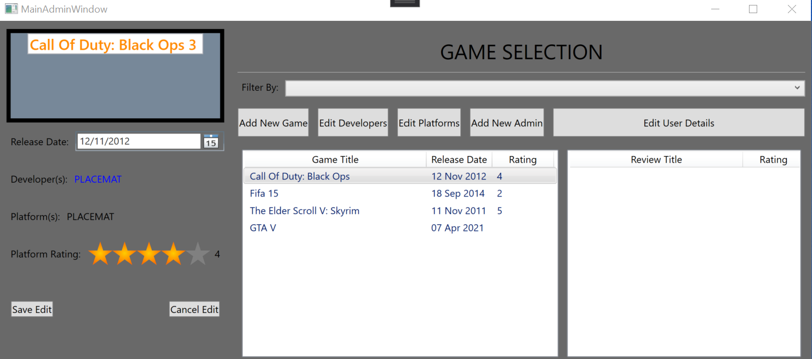
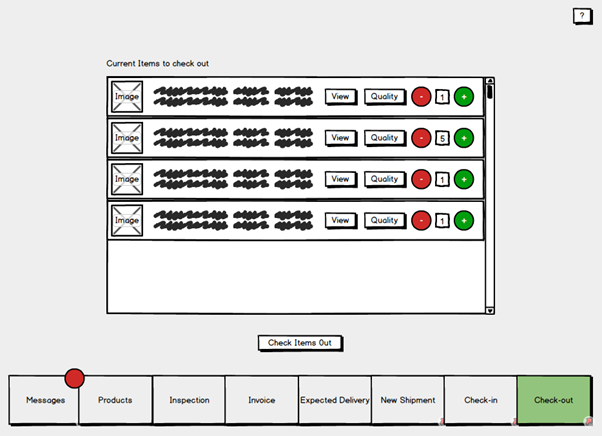

Hi, I'm Michael, an enthusiastic Software Engineer graduate from Nottingham Trent University based in Milton Keynes.
I have experience using various programming languages to create Windows and Android software programmes and enjoy
expressing my creativity through projects.
My proficent coding languages include:
However I have worked with numeorus programming languages during my time at university and enjoy expanding my skill sets
and learning new technologies and languages. To know more about me and see a breif breakdown of the modules I covered during
my academic studies, please take a look at my CV...
Recent Work

Final Year Project
For my final year project at university, I developed an Android application with Java in Android Studio and some
Javasript with Node.JS.
The application was designed from a specification provided by a real personal trainer
and delivered with accompanying documentation. The project completed over 8 months recieved a 2:1 grading at
the end of my final year.

Game Database System
Gam3 Sp0t is an ongoing task with an inspiration taken from IMDB. The WPF application is a simple system that
stores game details in a local database and allows a community of users to rate and review various titles
added to the databse by admins.
This was a was an opportunity to explore my understanding of C# using Entity Framework with a database
first approach to development. Using a TDD aproach within an agile enviroment, the development process of this
application was documented through a SCRUM framework.

Nottingham Trent University DBMS
During the final year of my academic studies we completed an Advanced Analysis & Design module which required
the development of a group project from an inital concept to a working product. Alongside a small group of peers,
we created a databse managment system to track the deliveries and manage stock control for our universities on-campus
store; this was developled using C# and Windows Forms with an accompanying mobile application in Android to scan product
locations on the shop floor.
Within this team, my role was focused towards the Front End development and documentation. However every member
within our group took responsibility in picking up any task that needed assistance, meaning everyone was exposed
to various roles in order to work as a cross-functional team.
{kind=link}
{kind=link}